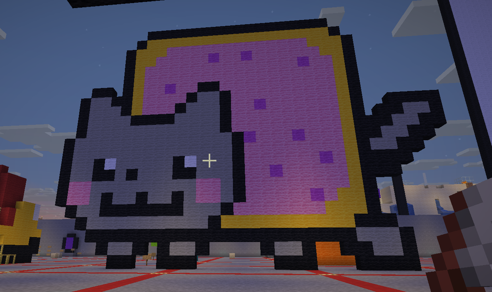

For my sculpture, I selected Nyan Cat. I feel she is stable and has staying power in the meme community; she was a perfect mix of the cat-video era, new digital media, and the humor of the time. It is also interesting that she bridged cultures, combining Western internet culture with Japanese Vocaloid. It was a big treat getting to build her, as when I was young, she was my obsession and the fuel for my love of cats.